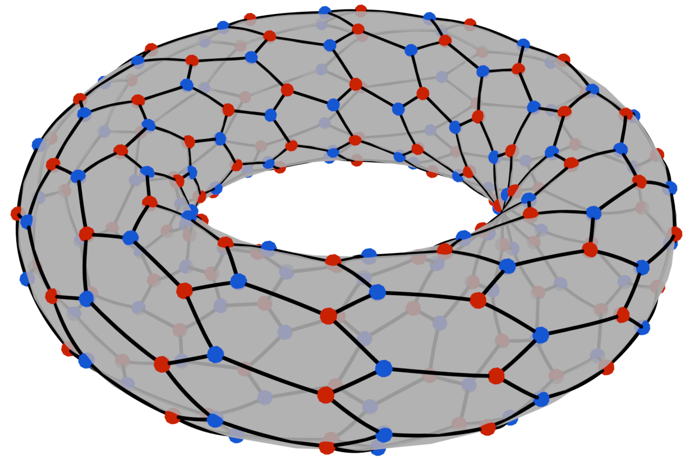

Group Actions on Discrete Objects 2027
Izola, Slovenia · 19–24 April 2027

Overview
GADO'27 is an international conference on group actions on discrete objects. It is the second in a series of conferences with this title; the first was held in 2024 in Kranjska Gora. The conference will take place in the Venetian town of Izola on the Slovenian Mediterranean coast.
The topic lies at the intersection of algebra and discrete mathematics and focuses mainly on highly symmetric maps, polytopes, Riemann surfaces and graphs.
- Title
- Group Actions on Discrete Objects 2027 (GADO'27)
- Dates
- 19–24 April 2027 (arrival Monday 19 April, departure Saturday 24 April)
- Venue
- Hotel Belvedere, Izola, Slovenia
- Expected participants
- about 30
- Contact
- gado27@example.org (placeholder address)
Format
The conference combines classical invited lectures, in which distinguished speakers present recent results and open challenges in their areas, with workshops in which groups of participants work together on the problems presented.
Special attention is given to involving early-career researchers in the research work of more experienced participants. This is served by a series of shorter invited talks by doctoral students and postdoctoral researchers, and by a balanced composition of the groups in the workshop sessions.
Venue
The conference will be held at the Belvedere hotel resort, set on a hill above the town of Izola with views over the Gulf of Trieste. See How to get there for travel information.
Important dates
All dates below are placeholders and will be confirmed.
| Registration opens | 1 January 2027 |
|---|---|
| Registration deadline | 15 March 2027 |
| Conference | 19–24 April 2027 |
Committees
Organising committee
Primož Potočnik (UL FMF and IMFM), Draženka Višnjić (UL), Alejandra Ramos (IMFM), Micael Toledo (UL and IMFM), Antonio Montero (UL and IMFM).
Scientific committee
Primož Potočnik, Isabel Hubard (UNAM, Mexico), Pablo Spiga (Università degli Studi di Milano-Bicocca).